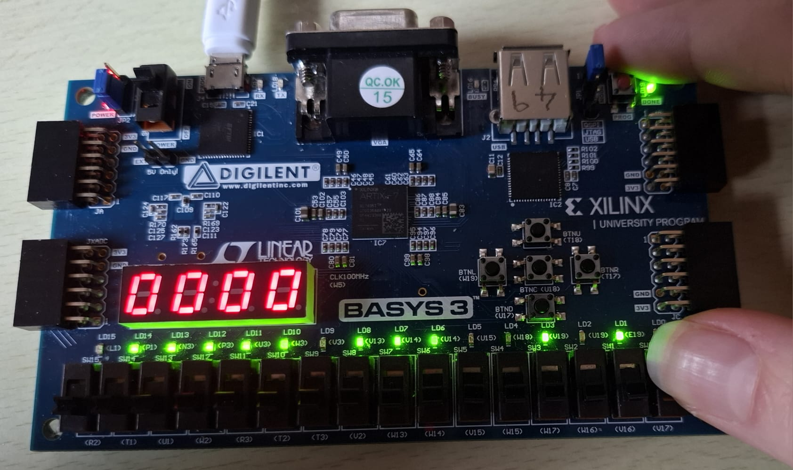
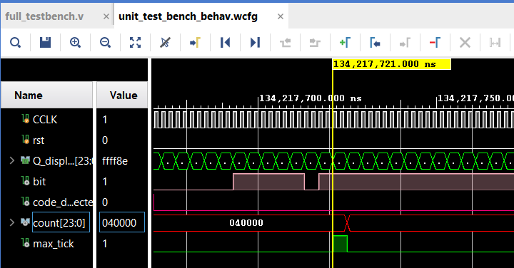
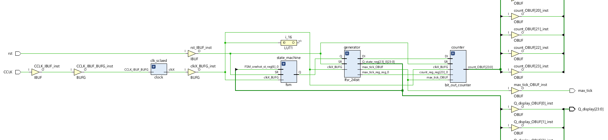
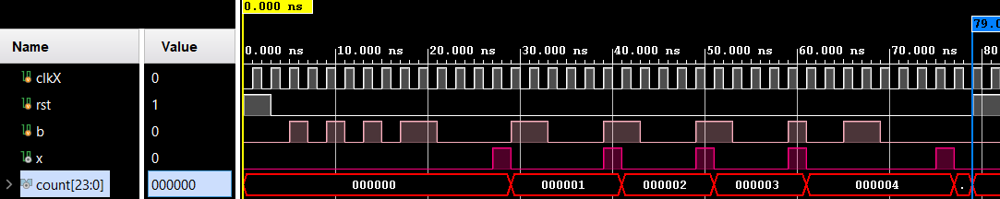
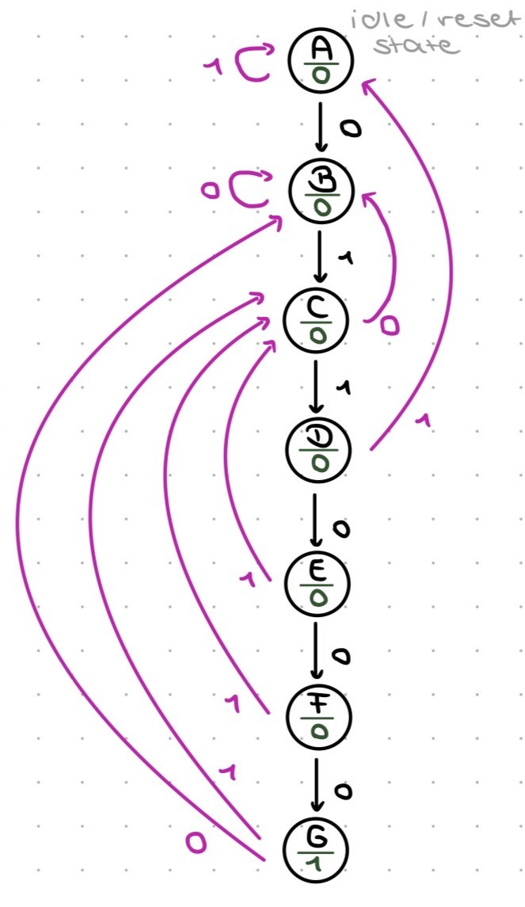

Digital design / Verification
FPGA Sequence Detector





01 / 05
I designed and implemented a codeword detector on a Basys 3 FPGA using a 24-bit linear-feedback shift register, a Moore finite state machine and a counter. The system detects overlapping occurrences of the six-bit sequence 011000 in a pseudorandom bitstream, then presents the results on the board's LEDs and seven-segment display.